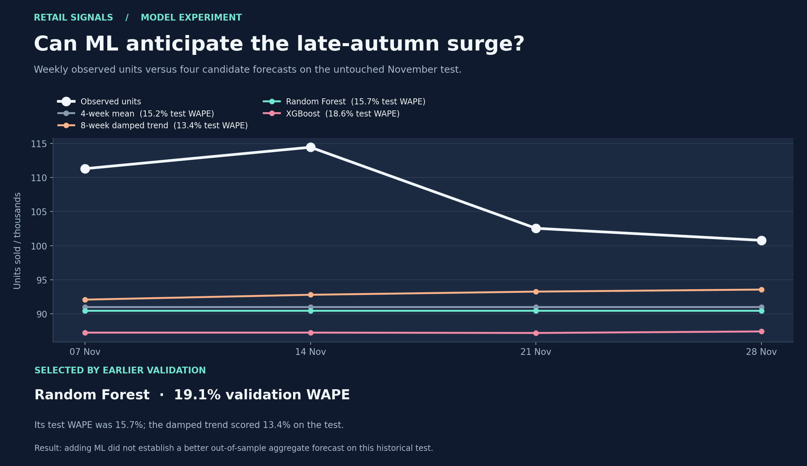
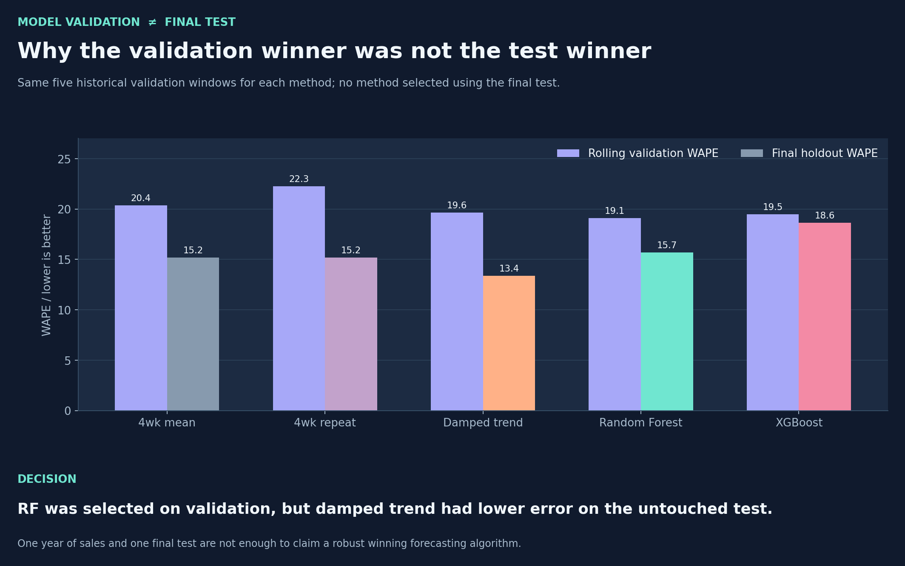
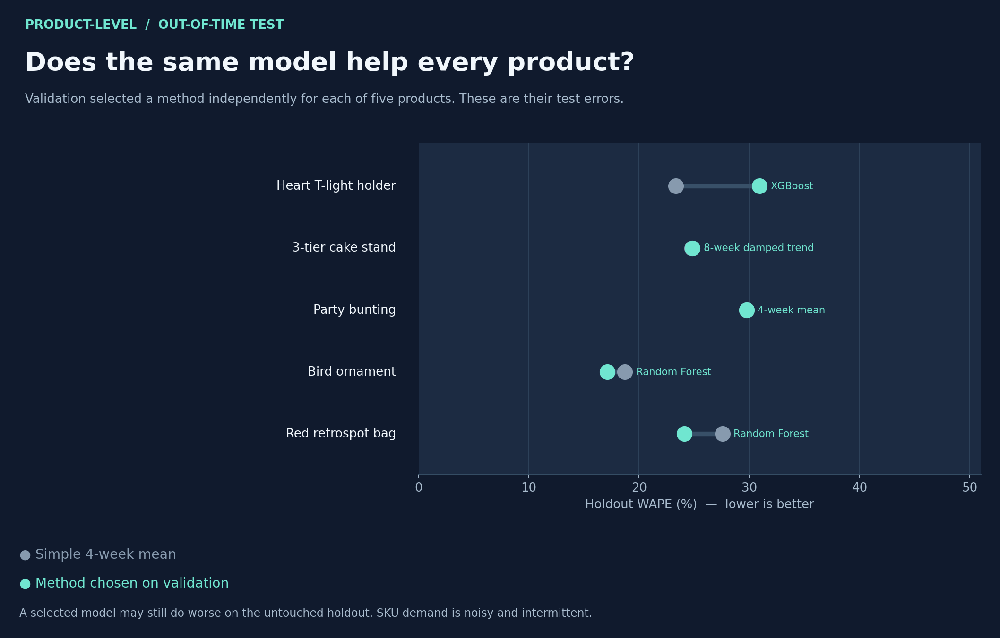

What I compared
I kept the same five nonoverlapping, four-week historical validation periods and the same separate November 7–December 4, 2011 test as the original statistical experiment. Alongside the four-week average, four-week repeat and eight-week damped trend, I trained two ML models: Random Forest and XGBoost. The ML models share patterns across 120 active SKUs chosen entirely from early history, plus a separate aggregate-sales series. Their features are available at the forecast date: earlier weekly sales, moving statistics, target-week calendar information and forecast horizon.
Both ML methods make direct predictions for weeks one through four. I fixed their hyperparameters before evaluation and did not use the final test to adjust them. Every candidate was evaluated with WAPE, then a method was chosen separately for total sales and each of five previously chosen products.

The result was not the one I expected
Random Forest had the lowest aggregate error on the earlier validation periods, so it was selected under the predefined rule. On the genuinely untouched test, however, the eight-week damped trend had a lower error. Had I simply displayed the lowest test score as my model selection, I would have exaggerated the result.
| Candidate | Earlier validation WAPE | Final test WAPE | Selection status |
|---|---|---|---|
| Four-week moving average | 20.4% | 15.2% | – |
| Repeat the last four weeks | 22.3% | 15.2% | – |
| Eight-week damped trend | 19.6% | 13.4% | – |
| Random Forest | 19.1% | 15.7% | Selected in advance |
| XGBoost | 19.5% | 18.6% | – |

Did ML behave differently at product level?
Yes, although the pattern was mixed. Validation chose XGBoost for one of the five products, Random Forest for two, and the simpler rules for the other two. Different products responded differently on the final test. I kept the early-history SKU-selection rule from the earlier experiment, rather than hand-picking products after seeing the test results.
| Product | Method selected on validation | Selected-method test WAPE | Simple-baseline test WAPE |
|---|---|---|---|
| WHITE HANGING HEART T-LIGHT HOLDER | XGBoost | 30.9% | 23.3% |
| REGENCY CAKESTAND 3 TIER | Eight-week damped trend | 24.8% | 24.8% |
| PARTY BUNTING | Four-week moving average | 29.7% | 29.7% |
| ASSORTED COLOUR BIRD ORNAMENT | Random Forest | 17.1% | 18.7% |
| JUMBO BAG RED RETROSPOT | Random Forest | 24.1% | 27.6% |

What I learned—and what remains missing
The comparison argues against assuming complex models will automatically win. The strongest method during one validation window is not guaranteed to generalize to a different period. I would want more seasons and promotion and stock-availability records before designing a production replenishment forecast. The existing dataset covers approximately one year and is filtered to positive sold quantities: it does not measure customers' unmet demand.
Methodological caution: This is a single historical, offline test on relatively active products. Hyperparameters were set in advance, not searched extensively. An empty observed week was treated as zero recorded units, not proof that true demand was zero. These are illustrative out-of-time results, not a current-market forecast.
Executed comparison notebook · Reproducible training code · Validation evidence · Full investigation